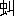

寒蝉敗柳に鳴き大火西に向かいて流るる秋のはじめになりければ心細くも
三蔵は二人の弟子にいざなわれ
嶮難を
凌ぎ道を急ぎたもうに、たちまち前面に一条の大河あり。大波
湧返りて河の広さそのいくばくという限りを知らず。岸に上りて望み見るときかたわらに一つの石碑あり。上に
流沙河の三字を
篆字にて彫付け、表に四行の小
楷字あり。
八百流沙界
三千弱水深
鵞毛飄不起
蘆花定底沈
――西遊記――
そのころ
流沙河の河底に
栖んでおった
妖怪の総数およそ一万三千、なかで、
渠ばかり心弱きはなかった。
渠に言わせると、自分は今までに九人の
僧侶を
啖った罰で、それら九人の
骸顱が自分の
頸の
周囲について離れないのだそうだが、他の
妖怪らには誰にもそんな
骸顱は見えなかった。「見えない。それは

の気の迷いだ」と言うと、
渠は信じがたげな眼で、一同を見返し、さて、それから、なぜ自分はこうみんなと違うんだろうといったふうな悲しげな表情に沈むのである。他の
妖怪らは互いに言合うた。「
渠は、
僧侶どころか、ろくに人間さえ
咋ったことはないだろう。誰もそれを見た者がないのだから。
鮒や
ざこを取って喰っているのなら見たこともあるが」と。また彼らは
渠に
綽名して、
独言悟浄と呼んだ。
渠が常に、自己に不安を感じ、身を切刻む後悔に
苛まれ、心の中で
反芻されるその
哀しい自己
苛責が、つい
独り言となって
洩れるがゆえである。遠方から見ると小さな
泡が
渠の口から出ているにすぎないようなときでも、実は彼が
微かな声で
呟いているのである。「
俺はばかだ」とか、「どうして俺はこうなんだろう」とか、「もうだめだ。俺は」とか、ときとして「俺は
堕天使だ」とか。
当時は、妖怪に限らず、あらゆる生きものはすべて何かの
生まれかわりと信じられておった。悟浄がかつて
天上界で
霊霄殿の
捲簾大将を勤めておったとは、この河底で誰言わぬ者もない。それゆえすこぶる懐疑的な悟浄自身も、ついにはそれを信じておるふりをせねばならなんだ。が、実をいえば、すべての
妖怪の中で
渠一人はひそかに、生まれかわりの説に疑いをもっておった。天上界で五百年前に捲簾大将をしておった者が今の俺になったのだとして、さて、その昔の捲簾大将と今のこの俺とが同じものだといっていいのだろうか？ 第一、俺は昔の天上界のことを何一つ記憶してはおらぬ。その記憶以前の捲簾大将と俺と、どこが同じなのだ。
身体が同じなのだろうか？ それとも魂が、だろうか？ ところで、いったい、魂とはなんだ？ こうした疑問を
渠が
洩らすと、
妖怪どもは「また、始まった」といって
嗤うのである。あるものは
嘲弄するように、あるものは
憐愍の面持ちをもって「病気なんだよ。悪い病気のせいなんだよ」と言うた。
事実、
渠は病気だった。
いつのころから、また、何が
因でこんな病気になったか、
悟浄はそのどちらをも知らぬ。ただ、気がついたらそのときはもう、このような
厭わしいものが、周囲に重々しく
立罩めておった。渠は何をするのもいやになり、見るもの聞くものがすべて渠の気を沈ませ、何事につけても自分が
厭わしく、自分に信用がおけぬようになってしもうた。何日も何日も
洞穴に
籠って、食を
摂らず、ギョロリと眼ばかり光らせて、渠は物思いに沈んだ。不意に立上がってその辺を歩き
廻り、何かブツブツ独り言をいいまた突然すわる。その動作の一つ一つを自分では意識しておらぬのである。どんな点がはっきりすれば、自分の不安が去るのか。それさえ渠には
解らなんだ。ただ、今まで当然として受取ってきたすべてが、不可解な疑わしいものに見えてきた。今まで
纏まった一つのことと思われたものが、バラバラに分解された姿で受取られ、その一つの部分部分について考えているうちに、全体の意味が解らなくなってくるといったふうだった。
医者でもあり・
占星師でもあり・
祈祷者でもある・一人の老いたる魚怪が、あるとき悟浄を見てこう言うた。「やれ、いたわしや。
因果な病にかかったものじゃ。この病にかかったが最後、百人のうち九十九人までは
惨めな一生を送らねばなりませぬぞ。元来、我々の中にはなかった病気じゃが、我々が人間を
咋うようになってから、我々の間にもごくまれに、これに侵される者が出てきたのじゃ。この病に侵された者はな、すべての物事を素直に受取ることができぬ。何を見ても、何に出会うても『なぜ？』とすぐに考える。究極の・
正真正銘の・神様だけがご存じの『なぜ？』を考えようとするのじゃ。そんなことを思うては生き物は生きていけぬものじゃ。そんなことは考えぬというのが、この世の生き物の間の約束ではないか。ことに始末に困るのは、この病人が『自分』というものに疑いをもつことじゃ。なぜ
俺は俺を俺と思うのか？
他の者を俺と思うてもさしつかえなかろうに。俺とはいったいなんだ？ こう考えはじめるのが、この病のいちばん悪い
徴候じゃ。どうじゃ。当たりましたろうがの。お気の毒じゃが、この病には、薬もなければ、医者もない。自分で
治すよりほかはないのじゃ。よほどの機縁に恵まれぬかぎり、まず、あんたの顔色のはれる時はありますまいて。」
文字の発明は
疾くに人間世界から伝わって、彼らの世界にも知られておったが、総じて彼らの間には文字を
軽蔑する習慣があった。生きておる
智慧が、そんな文字などという死物で書留められるわけがない。（絵になら、まだしも
画けようが。）それは、煙をその形のままに手で
執らえようとするにも似た愚かさであると、一般に信じられておった。したがって、文字を解することは、かえって生命力衰退の
徴候として
斥けられた。悟浄が日ごろ
憂鬱なのも、
畢竟、
渠が文字を解するために違いないと、
妖怪どもの間では思われておった。
文字は
尚ばれなかったが、しかし、思想が軽んじられておったわけではない。一万三千の怪物の中には哲学者も少なくはなかった。ただ、彼らの
語彙ははなはだ貧弱だったので、最もむずかしい大問題が、最も無邪気な言葉でもって考えられておった。彼らは
流沙河の河底にそれぞれ
考える店を張り、ために、この河底には一脈の哲学的憂鬱が漂うていたほどである。ある賢明な老魚は、美しい庭を買い、明るい窓の下で、永遠の悔いなき幸福について
瞑想しておった。ある高貴な魚族は、美しい
縞のある鮮緑の
藻の
蔭で、
竪琴をかき鳴らしながら、宇宙の音楽的調和を
讃えておった。醜く・鈍く・ばか正直な・それでいて、自分の愚かな苦悩を隠そうともしない
悟浄は、こうした知的な
妖怪どもの間で、いい
嬲りものになった。一人の
聡明そうな怪物が、悟浄に向かい、
真面目くさって言うた。「真理とはなんぞや？」そして
渠の返辞をも待たず、
嘲笑を口辺に浮かべて
大胯に歩み去った。また、一人の妖怪――これは
※魚［＃「魚＋台」、U+9B90、135-7］の精だったが――は、悟浄の病を聞いて、わざわざ
訪ねて来た。悟浄の病因が「死への恐怖」にあると察して、これを
哂おうがためにやって来たのである。「生ある間は死なし。死
到れば、すでに我なし。また、何をか
懼れん。」というのがこの男の論法であった。悟浄はこの議論の正しさを素直に認めた。というのは、
渠自身けっして死を
怖れていたのではなかったし、渠の病因もそこにはなかったのだから。
哂おうとしてやって来た※
［＃「魚＋台」、U+9B90、135-12］魚の精は失望して帰って行った。
妖怪の世界にあっては、
身体と心とが、人間の世界におけるほどはっきりと分かれてはいなかったので、心の病はただちに
烈しい肉体の苦しみとなって悟浄を責めた。堪えがたくなった
渠は、ついに意を決した。「このうえは、いかに骨が折れようと、また、いかに行く先々で
愚弄され
哂われようと、とにかく一応、この河の底に
栖むあらゆる
賢人、あらゆる医者、あらゆる
占星師に親しく会って、自分に
納得のいくまで、教えを
乞おう」と。
渠は粗末な
直綴を
纏うて、出発した。
なぜ、
妖怪は妖怪であって、人間でないか？ 彼らは、自己の属性の一つだけを、極度に、他との
均衡を絶して、醜いまでに、非人間的なまでに、発達させた不具者だからである。あるものは極度に
貪食で、したがって口と腹がむやみに大きく、あるものは極度に
淫蕩で、したがってそれに使用される器官が著しく発達し、あるものは極度に純潔で、したがって頭部を除くすべての部分がすっかり退化しきっていた。彼らはいずれも自己の性向、世界観に絶対に
固執していて、他との討論の結果、より高い結論に達するなどということを知らなかった。他人の考えの筋道を
辿るにはあまりに自己の特徴が著しく伸長しすぎていたからである。それゆえ、
流沙河の水底では、何百かの世界観や
形而上学が、けっして他と融和することなく、あるものは穏やかな絶望の歓喜をもって、あるものは底抜けの明るさをもって、あるものは
願望はあれど
希望なき
溜息をもって、
揺動く無数の
藻草のようにゆらゆらとたゆとうておった。
最初に
悟浄が訪ねたのは、
黒卵道人とて、そのころ最も高名な
幻術の
大家であった。あまり深くない水底に
累々と岩石を積重ねて
洞窟を作り、入口には
斜月三星洞の額が掛かっておった。
庵主は、
魚面人身、よく幻術を行のうて、存亡自在、冬、雷を起こし、夏、氷を造り、
飛者を走らしめ、
走者を飛ばしめるという
噂である。悟浄はこの道人に
三月仕えた。幻術などどうでもいいのだが、幻術を
能くするくらいなら
真人であろうし、真人なら宇宙の大道を
会得していて、
渠の病を
癒すべき
智慧をも知っていようと思われたからだ。しかし、悟浄は失望せぬわけにいかなかった。
洞の奥で
巨鼇の背に座った
黒卵道人も、それを取囲む数十の弟子たちも、口にすることといえば、すべて
神変不可思議の法術のことばかり。また、その術を用いて敵を
欺こうの、どこそこの宝を手に入れようのという実用的な話ばかり。悟浄の求めるような無用の思索の相手をしてくれるものは誰一人としておらなんだ。結局、ばかにされ
哂いものになった
揚句、悟浄は三星洞を追出された。
次に悟浄が行ったのは、
沙虹隠士のところだった。これは、年を経た
蝦の精で、すでに腰が弓のように曲がり、半ば河底の砂に埋もれて生きておった。悟浄はまた、
三月の間、この老隠士に侍して、身の
廻りの世話を焼きながら、その
深奥な哲学に触れることができた。老いたる蝦の精は曲がった腰を悟浄にさすらせ、深刻な顔つきで次のように言うた。
「世はなべて
空しい。この世に何か一つでも
善きことがあるか。もしありとせば、それは、この世の終わりがいずれは来るであろうことだけじゃ。別にむずかしい
理窟を考えるまでもない。我々の身の廻りを見るがよい。絶えざる変転、不安、
懊悩、恐怖、幻滅、闘争、
倦怠。まさに
昏々昧々紛々若々として
帰するところを知らぬ。我々は現在という瞬間の上にだけ立って生きている。しかもその脚下の現在は、ただちに消えて過去となる。次の瞬間もまた次の瞬間もそのとおり。ちょうど崩れやすい砂の斜面に立つ旅人の足もとが一足ごとに崩れ去るようだ。我々はどこに安んじたらよいのだ。
停まろうとすれば倒れぬわけにいかぬゆえ、やむを得ず走り下り続けているのが我々の生じゃ。幸福だと？ そんなものは空想の概念だけで、けっして、ある現実的な状態をいうものではない。
果敢ない希望が、名前を得ただけのものじゃ。」
悟浄の不安げな面持ちを見て、これを慰めるように
隠士は付加えた。
「だが、若い者よ。そう
懼れることはない。
浪にさらわれる者は
溺れるが、浪に乗る者はこれを越えることができる。この
有為転変をのり超えて
不壊不動の境地に到ることもできぬではない。
古の
真人は、
能く是非を超え善悪を超え、我を忘れ物を忘れ、
不死不生の域に達しておったのじゃ。が、昔から言われておるように、そういう境地が楽しいものだと思うたら、大間違い。苦しみもない代わりには、普通の生きものの
有つ楽しみもない。無味、無色。
誠に
味気ないこと
蝋のごとく砂のごとしじゃ。」
悟浄は控えめに口を
挾んだ。自分の聞きたいと望むのは、個人の幸福とか、
不動心の確立とかいうことではなくて、自己、および世界の究極の意味についてである、と。隠士は
目脂の
溜った眼をしょぼつかせながら答えた。
「自己だと？ 世界だと？ 自己を
外にして客観世界など、在ると思うのか。世界とはな、自己が時間と空間との間に投射した
幻じゃ。自己が死ねば世界は消滅しますわい。自己が死んでも世界が残るなどとは、俗も俗、はなはだしい
謬見じゃ。世界が消えても、正体の
判らぬ・この不思議な自己というやつこそ、依然として続くじゃろうよ。」
悟浄が仕えてからちょうど九十日めの朝、数日間続いた猛烈な腹痛と
下痢ののちに、この老
隠者は、ついに
斃れた。かかる醜い下痢と苦しい腹痛とを自分に与えるような客観世界を、自分の死によって
抹殺できることを喜びながら……。
悟浄は
懇ろにあとをとぶらい、涙とともに、また、新しい旅に上った。
噂によれば、
坐忘先生は常に
坐禅を組んだまま眠り続け、五十日に一度目を
覚まされるだけだという。そして、睡眠中の夢の世界を現実と信じ、たまに目覚めているときは、それを夢と思っておられるそうな。悟浄がこの先生をはるばる尋ね来たとき、やはり先生は
睡っておられた。なにしろ
流沙河で最も深い谷底で、上からの光もほとんど
射して来ない有様ゆえ、悟浄も眼の慣れるまでは見定めにくかったが、やがて、薄暗い底の台の上に
結跏趺坐したまま睡っている
僧形がぼんやり目前に浮かび上がってきた。外からの音も聞こえず、魚類もまれにしか来ない所で、悟浄もしかたなしに、坐忘先生の前に
坐って眼を
瞑ってみたら、何かジーンと耳が遠くなりそうな感じだった。
悟浄が来てから四日めに先生は眼を開いた。すぐ目の前で悟浄があわてて立上がり、
礼拝をするのを、見るでもなく見ぬでもなく、ただ二、三度
瞬きをした。しばらく無言の
対坐を続けたのち悟浄は恐る恐る口をきいた。「先生。さっそくでぶしつけでございますが、一つお伺いいたします。いったい『我』とはなんでございましょうか？」「
咄！
秦時の
※轢鑚［＃「車＋度」、U+2834F、139-16］！」という烈しい声とともに、悟浄の頭はたちまち一棒を
喰った。
渠はよろめいたが、また座に直り、しばらくして、今度は十分に警戒しながら、先刻の問いを繰返した。今度は棒が
下りて来なかった。厚い
唇を開き、顔も身体もどこも絶対に動かさずに、坐忘先生が、夢の中でのような言葉で答えた。「長く食を得ぬときに空腹を覚えるものが
じゃ。冬になって寒さを感ずるものが
じゃ。」さて、それで厚い
唇を閉じ、しばらく
悟浄のほうを見ていたが、やがて眼を閉じた。そうして、五十日間それを開かなかった。悟浄は
辛抱強く待った。五十日めにふたたび眼を覚ました坐忘先生は前に
坐っている悟浄を見て言った。「まだいたのか？」悟浄は
謹しんで五十日待った旨を答えた。「五十日？」と先生は、例の夢を見るようなトロリとした眼を悟浄に注いだが、じっとそのまま
ひと時ほど黙っていた。やがて重い唇が開かれた。
「時の長さを計る尺度が、それを感じる者の実際の感じ以外にないことを知らぬ者は愚かじゃ。人間の世界には、時の長さを計る器械ができたそうじゃが、のちのち大きな誤解の種を
蒔くことじゃろう。
大椿の
寿も、
朝菌の
夭も、長さに変わりはないのじゃ。時とはな、我々の頭の中の一つの
装置じゃわい」
そう言終わると、先生はまた眼を閉じた。五十日後でなければ、それがふたたび開かれることがないであろうことを知っていた悟浄は、睡れる先生に向かって
恭々しく頭を下げてから、立去った。
「恐れよ。おののけ。しかして、神を信ぜよ。」
と、
流沙河の最も繁華な四つ
辻に立って、一人の若者が叫んでいた。
「我々の短い
生涯が、その前とあととに続く無限の
大永劫の中に没入していることを思え。我々の住む狭い空間が、我々の知らぬ・また我々を知らぬ・無限の
大広袤の中に投込まれていることを思え。誰か、みずからの姿の微小さに、おののかずにいられるか。我々はみんな鉄鎖に
繋がれた死刑囚だ。毎瞬間ごとにその中の幾人かずつが我々の面前で殺されていく。我々はなんの希望もなく、順番を待っているだけだ。時は迫っているぞ。その短い間を、自己
欺瞞と
酩酊とに過ごそうとするのか？
呪われた
卑怯者め！ その間を
汝の
惨めな理性を
恃んで
自惚れ返っているつもりか？
傲慢な身の
程知らずめ！
噴嚏一つ、汝の貧しい理性と意志とをもってしては、左右できぬではないか。」
白皙の青年は
頬を紅潮させ、声を
嗄らして
叱咤した。その女性的な高貴な風姿のどこに、あのような激しさが潜んでいるのか。悟浄は驚きながら、その燃えるような美しい
瞳に見入った。
渠は青年の言葉から火のような
聖い矢が自分の魂に向かって放たれるのを感じた。
「我々の
為しうるのは、ただ神を愛し
己を憎むことだけだ。部分は、みずからを、独立した本体だと
自惚れてはならぬ。あくまで、全体の意志をもって己の意志とし、全体のためにのみ、自己を生きよ。神に合するものは一つの霊となるのだ」
確かにこれは
聖く
優れた魂の声だ、と悟浄は思い、しかし、それにもかかわらず、自分の今
饑えているものが、このような神の声でないことをも、また、感ぜずにはいられなかった。
訓言は薬のようなもので、
 瘧
瘧を病む者の前に
 腫
腫の薬をすすめられてもしかたがない、と、そのようなことも思うた。
その四つ
辻から程遠からぬ
路傍で、悟浄は醜い
乞食を見た。恐ろしい
佝僂で、高く盛上がった背骨に
吊られて
五臓はすべて上に昇ってしまい、頭の頂は肩よりずっと低く落込んで、
頤は
臍を隠すばかり。おまけに肩から背中にかけて一面に赤く
爛れた
腫物が崩れている有様に、悟浄は思わず足を
停めて
溜息を
洩らした。すると、
蹲っているその
乞食は、
頸が自由にならぬままに、赤く濁った
眼玉を
じろりと上向け、一本しかない長い前歯を見せてニヤリとした。それから、上に
吊上がった腕をブラブラさせ、悟浄の足もとまでよろめいて来ると、
渠を見上げて言った。
「
僭越じゃな、
わしを
憐れみなさるとは。若いかたよ。
わしを
可哀想なやつと思うのかな。どうやら、お前さんのほうがよほど可哀想に思えてならぬが。このような形にしたからとて、造物主を
わしが怨んどるとでも思っていなさるのじゃろう。どうしてどうして。逆に造物主を
讃めとるくらいですわい、このような珍しい形にしてくれたと思うてな。これからも、どんなおもしろい
恰好になるやら、思えば楽しみのようでもある。
わしの左
臂が鶏になったら、時を告げさせようし、右臂が
弾き弓になったら、それで

でもとって
炙り肉をこしらえようし、
わしの
尻が車輪になり、魂が馬にでもなれば、こりゃこのうえなしの乗物で、
重宝じゃろう。どうじゃ。驚いたかな。
わしの名はな、
子輿というてな、
子祀、
子犁、
子来という三人の
莫逆の友がありますじゃ。みんな
女※［＃「にんべん＋禹」、U+504A、142-16］氏の弟子での、ものの形を超えて
不生不死の
境に入ったれば、水にも
濡れず火にも
焼けず、寝て夢見ず、覚めて
憂いなきものじゃ。この間も、四人で笑うて話したことがある。わしらは、無をもって
首とし、生をもって背とし、死をもって
尻としとるわけじゃとな。アハハハ……。」
気味の悪い笑い声にギョッとしながらも、悟浄は、この乞食こそあるいは
真人というものかもしれんと思うた。この言葉が
本物だとすればたいしたものだ。しかし、この男の言葉や態度の中にどこか誇示的なものが感じられ、それが苦痛を忍んでむりに壮語しているのではないかと疑わせたし、それに、この男の醜さと
膿の
臭さとが悟浄に生理的な
反撥を与えた。
渠はだいぶ心を
惹かれながらも、ここで
乞食に仕えることだけは思い止まった。ただ先刻の話の中にあった女※
［＃「にんべん＋禹」、U+504A、144-7］氏とやらについて教えを
乞いたく思うたので、そのことを
洩らした。
「ああ、
師父か。師父はな、これより北の
方、二千八百里、この
流沙河が
赤水・
墨水と落合うあたりに、
庵を結んでおられる。お前さんの
道心さえ堅固なら、ずいぶんと、
教訓も垂れてくだされよう。せっかく修業なさるがよい。わしからもよろしくと申上げてくだされい。」と、みじめな
佝僂は、
尖った肩を精一杯
いからせて
横柄に言うた。
流沙河と墨水と赤水との落合う所を目指して、
悟浄は北へ旅をした。夜は
葦間に
仮寝の夢を結び、朝になれば、また、
果知らぬ水底の砂原を北へ向かって歩み続けた。楽しげに
銀鱗を
翻えす
魚族どもを見ては、
何故に我一人かくは心
怡しまぬぞと思い
侘びつつ、
渠は毎日歩いた。途中でも、目ぼしい
道人修験者の類は、
剰さずその門を
叩くことにしていた。
貪食と強力とをもって聞こえる
髯鮎子を訪ねたとき、色あくまで黒く、
逞しげな、この
鯰の
妖怪は、
長髯をしごきながら「遠き
慮のみすれば、必ず近き
憂いあり。
達人は大観せぬものじゃ。」と教えた。「たとえばこの魚じゃ。」と、
鮎子は眼前を泳ぎ過ぎる一尾の
鯉を
掴み取ったかと思うと、それをムシャムシャかじりながら、説くのである。「この魚だが、この魚が、なぜ、
わしの眼の前を通り、しかして、
わしの
餌とならねばならぬ
因縁をもっているか、をつくづくと考えてみることは、いかにも
仙哲にふさわしき振舞いじゃが、鯉を捕える前に、そんなことをくどくどと考えておった日には、獲物は逃げて行くばっかりじゃ。まずすばやく鯉を捕え、これにむしゃぶりついてから、それを考えても遅うはない。鯉は
何故に鯉なりや、鯉と
鮒との相異についての
形而上学的考察、等々の、ばかばかしく
高尚な問題にひっかかって、いつも鯉を捕えそこなう男じゃろう、お
前は。おまえの
物憂げな
眼の光が、それを
はっきり告げとるぞ。どうじゃ。」確かにそれに違いないと、悟浄は頭を垂れた。妖怪はそのときすでに鯉を平げてしまい、なお
貪婪そうな眼つきを悟浄のうなだれた
頸筋に
注いでおったが、急に、その眼が光り、
咽喉がゴクリと鳴った。ふと首を上げた悟浄は、
咄嗟に、危険なものを感じて身を引いた。妖怪の刃のような鋭い
爪が、恐ろしい速さで悟浄の咽喉をかすめた。最初の一撃にしくじった妖怪の怒りに燃えた
貪食的な顔が大きく迫ってきた。悟浄は強く水を
蹴って、泥煙を立てるとともに、
愴惶と洞穴を逃れ出た。
苛刻な現実精神をかの
獰猛な妖怪から、身をもって学んだわけだ、と、悟浄は
顫えながら考えた。
隣人愛の教説者として有名な
無腸公子の
講筵に列したときは、説教半ばにしてこの聖僧が突然
饑えに駆られて、自分の実の子（もっとも彼は
蟹の
妖精ゆえ、一度に無数の子供を卵からかえすのだが）を二、三人、むしゃむしゃ
喰べてしまったのを見て、
仰天した。
慈悲忍辱を説く聖者が、今、衆人環視の中で自分の子を捕えて食った。そして、食い終わってから、その事実をも忘れたるがごとくに、ふたたび慈悲の説を述べはじめた。忘れたのではなくて、先刻の飢えを
充たすための行為は、てんで彼の意識に上っていなかったに相違ない。ここにこそ
俺の学ぶべきところがあるのかもしれないぞ、と、
悟浄は
へんな
理窟をつけて考えた。俺の生活のどこに、ああした本能的な没我的な瞬間があるか。
渠は、
貴き
訓を得たと思い、
跪いて拝んだ。いや、こんなふうにして、いちいち概念的な解釈をつけてみなければ気の済まないところに、俺の弱点があるのだ、と、渠は、もう一度思い直した。教訓を、
罐詰にしないで
生のままに身につけること、そうだ、そうだ、と悟浄は今一遍、
拝をしてから、うやうやしく立去った。
蒲衣子の
庵室は、変わった道場である。
僅か四、五人しか弟子はいないが、彼らはいずれも師の歩みに
倣うて、自然の
秘鑰を探究する者どもであった。探求者というより、陶酔者と言ったほうがいいかもしれない。彼らの勤めるのは、ただ、自然を
観て、しみじみとその美しい調和の中に透過することである。
「まず感じることです。感覚を、最も美しく賢く
洗煉することです。自然美の直接の感受から離れた思考などとは、灰色の夢ですよ。」と弟子の一人が言った。
「心を深く潜ませて自然をごらんなさい。雲、空、風、雪、うす
碧い氷、
紅藻の揺れ、夜水中でこまかくきらめく
珪藻類の光、
鸚鵡貝の
螺旋、
紫水晶の結晶、
柘榴石の紅、
螢石の青。なんと美しくそれらが自然の秘密を語っているように見えることでしょう。」彼の言うことは、まるで詩人の言葉のようだった。
「それだのに、自然の暗号文字を解くのも今一歩というところで、突然、幸福な予感は消去り、私どもは、またしても、美しいけれども冷たい自然の横顔を見なければならないのです。」と、また、別の弟子が続けた。「これも、まだ私どもの感覚の鍛錬が足りないからであり、心が深く潜んでいないからなのです。私どもはまだまだ努めなければなりません。やがては、師のいわれるように『観ることが愛することであり、愛することが
創造ることである』ような瞬間をもつことができるでしょうから。」
その間も、師の
蒲衣子は一言も口をきかず、鮮緑の
孔雀石を一つ
掌にのせて、深い
歓びを
湛えた穏やかな
眼差で、じっとそれを見つめていた。
悟浄は、この庵室に
一月ばかり滞在した。その間、
渠も彼らとともに自然詩人となって宇宙の調和を
讃え、その
最奥の生命に同化することを願うた。自分にとって場違いであるとは感じながらも、彼らの静かな幸福に
惹かれたためである。
弟子の中に、一人、異常に美しい少年がいた。
肌は白魚のように
透きとおり、
黒瞳は夢見るように大きく見開かれ、額にかかる
捲毛は
鳩の胸毛のように柔らかであった。心に少しの憂いがあるときは、月の前を横ぎる薄雲ほどの
微かな
陰翳が美しい顔にかかり、
歓びのあるときは静かに澄んだ
瞳の奥が夜の宝石のように輝いた。師も
朋輩もこの少年を愛した。素直で、純粋で、この少年の心は疑うことを知らないのである。ただあまりに美しく、あまりにかぼそく、まるで何か貴い気体ででもできているようで、それがみんなに不安なものを感じさせていた。少年は、ひまさえあれば、白い石の上に
淡飴色の
蜂蜜を垂らして、それで
ひるがおの花を
画いていた。
悟浄がこの
庵室を去る四、五日前のこと、少年は朝、
庵を出たっきりでもどって来なかった。彼といっしょに出ていった一人の弟子は不思議な報告をした。自分が油断をしているひまに、少年は
ひょいと水に溶けてしまったのだ、自分は確かにそれを見た、と。他の弟子たちはそんなばかなことがと笑ったが、師の
蒲衣子はまじめにそれをうべなった。そうかもしれぬ、あの
児ならそんなことも起こるかもしれぬ、あまりに純粋だったから、と。
悟浄は、自分を取って
喰おうとした
鯰の
妖怪の
逞しさと、水に溶け去った少年の美しさとを、並べて考えながら、蒲衣子のもとを辞した。
蒲衣子の次に、
渠は
斑衣※婆［＃「魚＋厥」、U+9C56、148-15］の所へ行った。すでに五百余歳を経ている
女怪だったが、
肌のしなやかさは少しも処女と異なるところがなく、
婀娜たるその姿態は
能く
鉄石の心をも
蕩かすといわれていた。肉の楽しみを
極めることをもって唯一の生活信条としていたこの老女怪は、後庭に房を連ねること数十、容姿
端正な若者を集めて、この中に
盈たし、その楽しみに
耽けるにあたっては、
親昵をも
屏け、交遊をも絶ち、後庭に隠れて、昼をもって夜に継ぎ、
三月に一度しか外に顔を出さないのである。悟浄の訪ねたのはちょうどこの三月に一度のときに当たったので、幸いに老女怪を見ることができた。道を求める者と聞いて、
※婆［＃「魚＋厥」、U+9C56、149-3］は悟浄に説き聞かせた。ものうい
憊れの
翳を、
嬋娟たる容姿のどこかに見せながら。
「この道ですよ。この道ですよ。聖賢の教えも
仙哲の修業も、つまりはこうした
無上法悦の瞬間を持続させることにその目的があるのですよ。考えてもごらんなさい。この世に生を
享けるということは、実に、百千万億
恒河沙劫無限の時間の中でも
誠に
遇いがたく、ありがたきことです。しかも一方、死は
呆れるほど速やかに私たちの上に襲いかかってくるものです。遇いがたきの生をもって、及びやすきの死を待っている私たちとして、いったい、この道のほかに何を考えることができるでしょう。ああ、あの
痺れるような歓喜！ 常に新しいあの陶酔！」と女怪は酔ったように
 妖淫靡
妖淫靡な眼を細くして叫んだ。
「
貴方はお気の毒ながらたいへん醜いおかたゆえ、私のところに
留まっていただこうとは思いませぬから、ほんとうのことを申しますが、実は、私の後房では毎年百人ずつの若い男が
困憊のために死んでいきます。しかしね、断わっておきますが、その人たちはみんな喜んで、自分の一生に満足して死んでいくのですよ。誰一人、私のところへ留まったことを
怨んで死んだ者はありませなんだ。今死ぬために、この楽しみがこれ以上続けられないことを悔やんだ者はありましたが。」
悟浄の醜さを
憐れむような
眼つきをしながら、最後に
※婆［＃「魚＋厥」、U+9C56、149-18］はこうつけ加えた。
「徳とはね、楽しむことのできる能力のことですよ。」
醜いがゆえに、毎年死んでいく百人の仲間に加わらないで済んだことを感謝しつつ、悟浄はなおも旅を続けた。
賢人たちの説くところはあまりにもまちまちで、
渠はまったく何を信じていいやら解らなかった。
「我とはなんですか？」という渠の問いに対して、一人の賢者はこういった。「まず
吼えてみろ。ブウと鳴くようならお前は豚じゃ。ギャアと鳴くようなら
鵝鳥じゃ」と。他の賢者はこう教えた。「自己とはなんぞやとむりに言い表わそうとさえしなければ、自己を知るのは比較的困難ではない」と。また、
曰く「眼は一切を見るが、みずからを見ることができない。我とは
所詮、我の知る
能わざるものだ」と。
別の賢者は説いた、「我はいつも我だ。我の現在の意識の生ずる以前の・無限の時を通じて我といっていたものがあった。（それを誰も今は、記憶していないが）それがつまり今の我になったのだ。現在の我の意識が
亡びたのちの無限の時を通じて、また、我というものがあるだろう。それを今、誰も予見することができず、またそのときになれば、現在の我の意識のことを全然忘れているに違いないが」と。
次のように言った男もあった。「一つの継続した我とはなんだ？ それは記憶の影の
堆積だよ」と。この男はまた悟浄にこう教えてくれた。「記憶の喪失ということが、
俺たちの毎日していることの全部だ。忘れてしまっていることを忘れてしまっているゆえ、いろんなことが新しく感じられるんだが、実は、あれは、俺たちが何もかも徹底的に忘れちまうからのことなんだ。昨日のことどころか、一瞬間前のことをも、つまりそのときの知覚、そのときの感情をも何もかも次の瞬間には忘れちまってるんだ。それらの、ほんの
僅か一部の、
朧げな複製があとに残るにすぎないんだ。だから、悟浄よ、現在の瞬間てやつは、なんと、たいしたものじゃないか」と。
さて、五年に近い
遍歴の間、同じ容態に違った処方をする多くの医者たちの間を往復するような愚かさを繰返したのち、
悟浄は結局自分が少しも賢くなっていないことを見いだした。賢くなるどころか、なにかしら自分がフワフワした（自分でないような）訳の分からないものに成り果てたような気がした。昔の自分は愚かではあっても、少なくとも今よりは、
しっかりとした――それはほとんど肉体的な感じで、とにかく自分の重量を
有っていたように思う。それが今は、まるで重量のない・吹けば飛ぶようなものになってしまった。
外からいろんな模様を塗り付けられはしたが、中味のまるでないものに。こいつは、いけないぞ、と悟浄は思った。思索による意味の探索以外に、もっと直接的な
解答があるのではないか、という予感もした。こうした事柄に、計算の答えのような解答を求めようとした
己の愚かさ。そういうことに気がつきだしたころ、行く手の水が赤黒く濁ってきて、
渠は目指す
女※［＃「にんべん＋禹」、U+504A、151-17］氏のもとに着いた。
女※［＃「にんべん＋禹」、U+504A、152-1］氏は一見きわめて平凡な
仙人で、むしろ
迂愚とさえ見えた。悟浄が来ても別に
渠を使うでもなく、教えるでもなかった。
堅彊は死の
徒、
柔弱は生の徒なれば、「学ぼう。学ぼう」というコチコチの態度を忌まれたもののようである。ただ、ほんのときたま、別に誰に向かって言うのでもなく、何か
呟いておられることがある。そういうとき、悟浄は急いで聞き耳を立てるのだが、声が低くてたいていは聞きとれない。
三月の間、渠はついになんの教えも聞くことができなかった。「
賢者が他人について知るよりも、
愚者が
己について知るほうが多いものゆえ、自分の病は自分で治さねばならぬ」というのが、女※
［＃「にんべん＋禹」、U+504A、152-7］氏から聞きえた唯一の言葉だった。
三月めの終わりに、悟浄はもはやあきらめて、
暇乞いに師のもとへ行った。するとそのとき、珍しくも女※
［＃「にんべん＋禹」、U+504A、152-9］氏は
縷々として悟浄に教えを垂れた。「目が三つないからとて悲しむことの愚かさについて」「
爪や髪の伸長をも意志によって左右しようとしなければ気が済まない者の不幸について」「酔うている者は車から
墜ちても傷つかないことについて」「しかし、一概に考えることが悪いとは言えないのであって、考えない者の幸福は、船酔いを知らぬ豚のようなものだが、ただ考えることについて考えることだけは禁物であるということについて」
女※
［＃「にんべん＋禹」、U+504A、152-14］氏は、自分のかつて
識っていた、ある神智を有する魔物のことを話した。その魔物は、上は
星辰の運行から、下は微生物類の生死に至るまで、何一つ知らぬことなく、
深甚微妙な計算によって、既往のあらゆる出来事を
溯って知りうるとともに、将来起こるべきいかなる出来事をも推知しうるのであった。ところが、この魔物はたいへん不幸だった。というのは、この魔物があるときふと、「自分のすべて予見しうる全世界の出来事が、
何故に（経過的な
いかにしてではなく、根本的な
何故に）そのごとく起こらねばならぬか」ということに想到し、その究極の理由が、彼の深甚微妙なる大計算をもってしてもついに
探し出せないことを見いだしたからである。何故
向日葵は黄色いか。何故草は緑か。何故すべてがかく
在るか。この疑問が、この
神通力広大な魔物を苦しめ悩ませ、ついに
惨めな死にまで導いたのであった。
女※［＃「にんべん＋禹」、U+504A、153-5］氏はまた、別の
妖精のことを話した。これはたいへん小さなみすぼらしい魔物だったが、常に、自分はある小さな鋭く光ったものを探しに生まれてきたのだと言っていた。その光るものとはどんなものか、誰にも解らなかったが、とにかく、
小妖精は熱心にそれを求め、そのために生き、そのために死んでいったのだった。そしてとうとう、その小さな鋭く光ったものは見つからなかったけれど、その小妖精の一生はきわめて幸福なものだったと思われると女※
［＃「にんべん＋禹」、U+504A、153-9］氏は語った。かく語りながら、しかし、これらの話のもつ意味については、なんの説明もなかった。ただ、最後に、師は次のようなことを言った。
「聖なる狂気を知る者は幸いじゃ。彼はみずからを殺すことによって、みずからを救うからじゃ。聖なる狂気を知らぬ者は
禍いじゃ。彼は、みずからを殺しも生かしもせぬことによって、徐々に亡びるからじゃ。愛するとは、より高貴な理解のしかた。行なうとは、より明確な思索のしかたであると知れ。何事も意識の
毒汁の中に浸さずにはいられぬ
憐れな悟浄よ。我々の運命を決定する大きな変化は、みんな我々の意識を伴わずに行なわれるのだぞ。考えてもみよ。お前が生まれたとき、お前はそれを意識しておったか？」
悟浄は謹しんで師に答えた。師の教えは、今ことに身にしみてよく理解される。実は、自分も永年の遍歴の間に、思索だけではますます
泥沼に陥るばかりであることを感じてきたのであるが、今の自分を突破って生まれ変わることができずに苦しんでいるのである、と。それを聞いて
女※［＃「にんべん＋禹」、U+504A、154-3］氏は言った。
「渓流が流れて来て
断崖の近くまで来ると、一度
渦巻をまき、さて、それから
瀑布となって落下する。悟浄よ。お前は今その渦巻の一歩手前で、ためらっているのだな。一歩渦巻にまき込まれてしまえば、
那落までは一息。その途中に思索や反省や
低徊のひまはない。
臆病な悟浄よ。お前は
渦巻きつつ落ちて行く者どもを恐れと
憐れみとをもって
眺めながら、自分も思い切って飛込もうか、どうしようかと
躊躇しているのだな。遅かれ早かれ自分は谷底に落ちねばならぬとは十分に承知しているくせに。
渦巻にまき込まれないからとて、けっして幸福ではないことも承知しているくせに。それでもまだお前は、傍観者の地位に
恋々として離れられないのか。
物凄い生の渦巻の中で
喘いでいる連中が、案外、
はたで見るほど不幸ではない（少なくとも懐疑的な傍観者より何倍も
しあわせだ）ということを、愚かな悟浄よ、お前は知らないのか。」
師の教えのありがたさは
骨髄に徹して感じられたが、それでもなおどこか釈然としないものを残したまま、悟浄は、師のもとを辞した。
もはや誰にも道を聞くまいぞと、
渠は思うた。「誰も彼も、えらそうに見えたって、実は何一つ
解ってやしないんだな」と悟浄は
独言を言いながら帰途についた。「『お互いに解ってる
ふりをしようぜ。解ってやしないんだってことは、お互いに解り切ってるんだから』という約束のもとにみんな生きているらしいぞ。こういう約束がすでに在るのだとすれば、それをいまさら、解らない解らないと言って騒ぎ立てる俺は、なんという気の
利かない困りものだろう。まったく。」
のろまで
愚図の
悟浄のことゆえ、
翻然大悟とか、
大活現前とかいった
鮮やかな芸当を見せることはできなかったが、徐々に、目に見えぬ変化が
渠の上に働いてきたようである。
はじめ、それは
賭けをするような気持であった。一つの選択が許される場合、一つの
途が永遠の
泥濘であり、他の途が
険しくはあってもあるいは救われるかもしれぬのだとすれば、誰しもあとの途を選ぶにきまっている。それだのになぜ
躊躇していたのか。そこで
渠ははじめて、自分の考え方の中にあった
卑しい功利的なものに気づいた。
嶮しい
途を選んで苦しみ抜いた
揚句に、さて結局救われないとなったら取返しのつかない損だ、という気持が知らず知らずの間に、自分の不決断に作用していたのだ。骨折り損を避けるために、骨はさして折れない代わりに決定的な損亡へしか導かない途に留まろうというのが、
不精で愚かで卑しい
俺の気持だったのだ。
女※［＃「にんべん＋禹」、U+504A、155-15］氏のもとに滞在している間に、しかし、渠の気持も、しだいに一つの方向へ追詰められてきた。初めは追つめられたものが、しまいにはみずから進んで動き出すものに変わろうとしてきた。自分は今まで自己の幸福を求めてきたのではなく、世界の意味を尋ねてきたと自分では思っていたが、それはとんでもない間違いで、実は、そういう変わった形式のもとに、最も執念深く自己の幸福を探していたのだということが、悟浄に
解りかけてきた。自分は、そんな世界の意味を
云々するほどたいした生きものでないことを、
渠は、
卑下感をもってでなく、安らかな満足感をもって感じるようになった。そして、そんな生意気をいう前に、とにかく、自分でもまだ知らないでいるに違いない自己を試み展開してみようという勇気が出てきた。
躊躇する前に試みよう。結果の成否は考えずに、ただ、試みるために全力を挙げて試みよう。決定的な失敗に
帰したっていいのだ。今までいつも、失敗への
危惧から努力を
抛棄していた渠が、骨折り損を
厭わないところにまで
昇華されてきたのである。
悟浄の肉体はもはや疲れ切っていた。
ある日、
渠は、とある道ばたにぶっ倒れ、そのまま深い
睡りに落ちてしまった。まったく、何もかも忘れ果てた
昏睡であった。渠は
昏々として幾日か睡り続けた。空腹も忘れ、夢も見なかった。
ふと、
眼を覚ましたとき、何か
四辺が、青白く明るいことに気がついた。夜であった。明るい月夜であった。大きな
円い春の満月が水の上から射し込んできて、浅い川底を穏やかな白い明るさで満たしているのである。悟浄は、熟睡のあとのさっぱりした気持で起上がった。とたんに空腹に気づいた。渠はそのへんを泳いでいた魚類を五、六尾
手掴みにしてむしゃむしゃ
頬張り、さて、腰に
提げた
瓢の酒を
喇叭飲みにした。
旨かった。ゴクリゴクリと渠は音を立てて飲んだ。
瓢の底まで飲み干してしまうと、いい気持で歩き出した。
底の
真砂の一つ一つがはっきり見分けられるほど明るかった。水草に沿うて、絶えず小さな
水泡の列が水銀球のように光り、揺れながら昇って行く。ときどき
渠の姿を見て逃出す小魚どもの腹が白く光っては
青水藻の影に消える。悟浄はしだいに陶然としてきた。
柄にもなく歌が
唱いたくなり、すんでのことに、声を張上げるところだった。そのとき、ごく遠くの方で誰かの唱っているらしい声が耳にはいってきた。渠は
立停まって耳をすました。その声は水の外から来るようでもあり、水底のどこか遠くから来るようでもある。低いけれども
澄透った声でほそぼそと聞こえてくるその歌に耳を傾ければ、
江国春風吹不起
鷓鴣啼在深花裏
三級浪高魚化竜
痴人猶※［＃「尸＋斗」、U+21C37、158-13］夜塘水
どうやら、そんな文句のようでもある。
悟浄はその場に腰を下ろして、なおもじっと聴入った。青白い月光に染まった透明な水の世界の中で、単調な歌声は、風に消えていく狩りの角笛の
音のように、ほそぼそといつまでもひびいていた。
寐たのでもなく、さりとて覚めていたのでもない。悟浄は、魂が甘く
疼くような気持で
茫然と永い間そこに
蹲っていた。そのうちに、
渠は奇妙な、夢とも幻ともつかない世界にはいって行った。水草も魚の影も
卒然と渠の視界から消え去り、急に、
得もいわれぬ
蘭麝の
匂いが漂うてきた。と思うと、見慣れぬ二人の人物がこちらへ進んで来るのを渠は見た。
前なるは手に
錫杖をついた
一癖ありげな
偉丈夫。後ろなるは、頭に
宝珠瓔珞を
纏い、頂に
肉髻あり、
妙相端厳、
仄かに
円光を負うておられるは、何さま
尋常人ならずと見えた。さて前なるが近づいて言った。
「我は
托塔天王の二太子、
木叉恵岸。これにいますはすなわち、わが
師父、南海の
観世音菩薩摩訶薩じゃ。
天竜・
夜叉・
乾闥婆より、
阿脩羅・
迦楼羅・
緊那羅・
摩 羅伽
羅伽・人・非人に至るまで等しく
憫れみを垂れさせたもうわが師父には、このたび、
爾、悟浄が
苦悩をみそなわして、特にここに
降って
得度したもうのじゃ。ありがたく承るがよい。」
覚えず
頭を垂れた悟浄の耳に、美しい女性的な声――
妙音というか、
梵音というか、
海潮音というか、――が響いてきた。
「
悟浄よ、
諦かに、わが言葉を聴いて、よくこれを思念せよ。身の
程知らずの悟浄よ。いまだ得ざるを得たりといいいまだ
証せざるを証せりと言うのをさえ、
世尊はこれを
増上慢とて難ぜられた。さすれば、証すべからざることを証せんと求めた
爾のごときは、これを
至極の増上慢といわずしてなんといおうぞ。爾の求むるところは、
阿羅漢も
辟支仏もいまだ求むる
能わず、また求めんともせざるところじゃ。哀れな悟浄よ。いかにして爾の魂はかくもあさましき迷路に入ったぞ。正観を得れば
浄業たちどころに成るべきに、爾、
心相羸劣にして
邪観に陥り、今この
三途無量の苦悩に
遭う。
惟うに、
爾は
観想によって救わるべくもないがゆえに、これよりのちは、一切の思念を
棄て、ただただ身を働かすことによってみずからを救おうと心がけるがよい。時とは人の
作用の
謂じゃ。世界は、概観によるときは無意味のごとくなれども、その細部に直接働きかけるときはじめて無限の意味を
有つのじゃ。悟浄よ。まずふさわしき場所に身を置き、ふさわしき働きに身を打込め。身の程知らぬ『何故』は、
向後一切打捨てることじゃ。これをよそにして、爾の救いはないぞ。さて、今年の秋、この
流沙河を東から西へと横切る三人の僧があろう。西方
金蝉長老の
転生、
玄奘法師と、その二人の弟子どもじゃ。
唐の
太宗皇帝の
綸命を受け、
天竺国大雷音寺に
大乗三蔵の
真経をとらんとて
赴くものじゃ。悟浄よ、
爾も玄奘に従うて西方に
赴け。これ爾にふさわしき
位置にして、また、爾にふさわしき勤めじゃ。
途は苦しかろうが、よく、疑わずして、ただ努めよ。玄奘の弟子の一人に
悟空なるものがある。無知無識にして、ただ、信じて疑わざるものじゃ。爾は特にこの者について学ぶところが多かろうぞ。」
悟浄がふたたび頭をあげたとき、そこには何も見えなかった。
渠は
茫然と水底の月明の中に立ちつくした。妙な気持である。ぼんやりした頭の隅で、渠は次のようなことを
とりとめもなく考えていた。
「……そういうことが起こりそうな者に、そういうことが起こり、そういうことが起こりそうなときに、そういうことが起こるんだな。半年前の
俺だったら、今のようなおかしな夢なんか見るはずはなかったんだがな。……今の夢の中の
菩薩の言葉だって、考えてみりゃ、
女※［＃「にんべん＋禹」、U+504A、160-18］氏や
髯鮎子の言葉と、ちっとも違ってやしないんだが、今夜はひどく身にこたえるのは、どうも変だぞ。そりゃ俺だって、夢なんかが
救済になるとは思いはしないさ。しかし、なぜか知らないが、もしかすると、今の夢のお告げの
唐僧とやらが、ほんとうにここを通るかもしれないというような気がしてしかたがない。そういうことが起こりそうなときには、そういうことが起こるものだというやつでな。……」
渠はそう思って久しぶりに微笑した。
その年の秋、
悟浄は、はたして、
大唐の
玄奘法師に
値遇し奉り、その力で、水から出て人間となりかわることができた。そうして、勇敢にして
天真爛漫な
聖天大聖孫悟空や、
怠惰な楽天家、
天蓬元帥猪悟能とともに、新しい
遍歴の途に上ることとなった。しかし、その途上でも、まだ
すっかりは昔の病の
脱け切っていない悟浄は、依然として独り言の癖を
止めなかった。
渠は
呟いた。
「どうも
へんだな。どうも
腑に落ちない。分からないことを
強いて尋ねようとしなくなることが、結局、分かったということなのか？ どうも
曖昧だな！ あまりみごとな
脱皮ではないな！ フン、フン、どうも、うまく
納得がいかぬ。とにかく、以前ほど、苦にならなくなったのだけは、ありがたいが……。」
――「わが西遊記」の中――